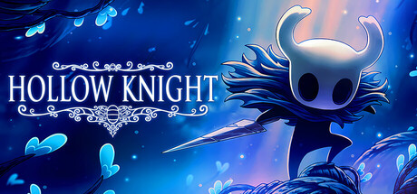

Exploração e açãoPC · 2017
Hollow Knight
Team CherrySob a pequena cidade de Dirtmouth existe Hallownest, um reino subterrâneo cheio de caminhos conectados e segredos. Hollow Knight combina exploração, combates desafiadores e novas habilidades que permitem alcançar outras áreas. A arte desenhada à mão e os encontros com habitantes desse mundo ajudam a contar sua história sem interromper a aventura.